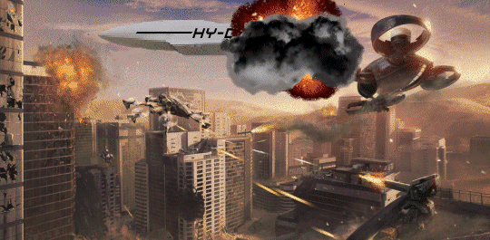
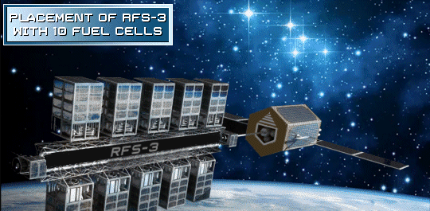

Chapter 02 Description
It's 2040. Tensions are building between Norway and Russia and then expand to the Arctic region. The tensions are based around the melting of the polar ice caps due to global warming. Melted ice caps will open up the Arctic sea lanes and give access to bountiful oil deposits. Marcus Mephitis plans to exploit these tensions and build up his industrial base in preparation of a war. The result is the War of 2044.

Russian Norwegian tensions In 2040 there was great tension between Russia and Norway because of the new polar shipping lanes opened up by global warming. The Russian Federation sent a formal letter to the Kingdom of Norway outlining its demands for unfettered access to the newly navigable Arctic sea lanes, citing historical claims to the region and the potential economic benefits of exploiting its resources. This is what they demanded: Unrestricted Navigation Rights: Russia sought unimpeded access to the Northern Sea Route (NSR), a strategic waterway along Russia's Arctic coast, for both commercial and military vessels. This would effectively grant Russia control over a significant portion of the Arctic shipping lanes. Resource Exploration Rights: Russia demanded exclusive rights to explore and exploit natural resources within the Arctic Economic Zone (AEZ), a vast area extending from Russia's coastline into the Arctic Ocean. This would grant Russia a monopoly on the region's rich oil, gas, and mineral deposits. Shared Responsibility for Arctic Security: Russia proposed a joint Arctic security framework, with Russia playing a leading role in maintaining stability and preventing potential conflicts in the region. This would strengthen Russia's influence over Arctic security matters. Environmental Cooperation: Russia expressed its commitment to environmental protection in the Arctic and called for collaboration with Norway and other Arctic nations to establish sustainable practices for resource development. However, Russia also emphasized its right to prioritize economic development in the region. The Russian letter sparked concerns among other Arctic nations, including Norway, who feared that Russia's demands would undermine their sovereignty and environmental protections in the region. Norway responded with its own diplomatic efforts, emphasizing the need for international cooperation and adherence to existing international agreements governing the Arctic. The Arctic region has become increasingly contested as global warming opens up new navigable sea lanes and exposes vast untapped resources. Russia's demands for unfettered access to the Arctic underscored the growing tensions between nations vying for influence in this strategically important region The U.S. backed Norway in defending its national sovereignty. The leaders knew that Russia not only coveted the newly availability of Norwegian shipping lanes and fossil fuels in the now unfrozen arctic, they coveted the same things in the northernmost U.S. Yes, the United States strongly supported Norway in its defense of national sovereignty in the Arctic in 2040. The United States recognized the importance of maintaining a rules-based international order in the Arctic, and it viewed Russia's demands as a threat to that order. The United States also had its own interests in the Arctic, including a desire to ensure freedom of navigation and to protect the region's fragile environment. The United States' support for Norway took a number of forms, including: Diplomatic support: The United States joined Norway and other Arctic nations in condemning Russia's demands and reaffirming their commitment to international law in the Arctic. Military support: The United States conducted joint military exercises with Norway in the Arctic, and it increased its naval presence in the region. Economic support: The United States provided financial assistance to Norway to help it develop its Arctic infrastructure. The United States' support for Norway was instrumental in preventing Russia from achieving its goals in the Arctic. Russia's demands were eventually watered down, and the Arctic remained a region of international cooperation. The United States' support for Norway was also a reflection of its broader strategy of countering Russian aggression. In the years following Russia's annexation of Crimea in 2014, the United States and its allies had imposed a series of sanctions on Russia and increased their military presence in Eastern Europe. The United States' support for Norway was part of this broader effort to deter Russian aggression and uphold the rules-based international order.Then in 2042, tremendous amounts of gas and oil were found in the northernmost Arctic sea. With traditional oil fields drying up in other parts of Russia and the Mid-East whoever developed these new found oil fields would have a financial and strategic advantage around the world for decades. Russia felt like their very existence depended upon them owning and developing those oil fields. If they couldn't negotiate their way to ownership the Russian regime would simply take it. In 2043, Russia began drilling for oil in the Arctic Sea in an area that Norway claimed as its own territory. This sparked a diplomatic crisis between the two countries and raised concerns about the potential for conflict in the Arctic region. Norway responded to Russia's actions in a number of ways, including: Protesting to the United Nations: Norway filed a formal protest with the United Nations Security Council, accusing Russia of violating international law. Imposing sanctions on Russia: Norway imposed a series of sanctions on Russia, including freezing the assets of Russian companies and individuals involved in the Arctic drilling project. Increasing its military presence in the Arctic: Norway increased its naval presence in the Arctic and conducted joint military exercises with other Arctic nations. Russia defended its actions, claiming that it was drilling within its own territory. However, Norway and its allies argued that Russia had no legal basis for its claims. The dispute over the Arctic drilling project was a major test of the international rules-based order in the region. It also highlighted the growing rivalry between Russia and the West in the Arctic. The dispute has yet to be resolved. However, it is clear that Russia's actions have had a significant impact on the Arctic region. The dispute has raised tensions between Russia and its neighbors, and it has made it more difficult to cooperate on issues such as environmental protection and maritime safety. The future of the Arctic is uncertain. However, it is clear that the region will continue to be a source of tension and conflict as nations compete for its resources and influence. In addition to the actions listed above, Norway also took a number of other steps to respond to Russia's drilling in the Arctic Sea. These included: Working with other Arctic nations to build a united front against Russia: Norway worked with other Arctic nations, such as Canada, Denmark, and Finland, to condemn Russia's actions and to call for a peaceful resolution to the dispute. Seeking support from the United States and other allies: Norway sought support from the United States and other allies, such as NATO, to help it pressure Russia to end its drilling activities. Preparing for a possible military conflict: While Norway hoped to resolve the dispute peacefully, it also began to prepare for the possibility of a military conflict with Russia. This included increasing its military spending and improving its military capabilities. The dispute over the Arctic drilling project had a significant impact on Norway. It damaged Norway's relationship with Russia and made it more difficult to cooperate on other issues. It also forced Norway to increase its military spending and to prepare for the possibility of a military conflict. Despite the challenges, Norway remained committed to defending its sovereignty and its interests in the Arctic. It worked tirelessly to build a united front against Russia and to seek support from its allies. It also took steps to improve its military capabilities. In the end, Norway was successful in preventing Russia from gaining control of the Arctic drilling project. However, the dispute left a lasting scar on the relationship between the two countries. It also made it clear that the Arctic is a region of growing competition and tension. Then in late 2043, Russia brought in oil rigs to U.S. claimed territory. This was the U.S.'s response. The United States responded to Russia's move with a combination of diplomatic, economic, and military measures. Diplomatic: The United States immediately lodged a formal protest with Russia, condemning its actions as a violation of international law and a threat to U.S. sovereignty. It also sought support from its allies, including NATO members, and worked to isolate Russia on the world stage. Economic: The United States imposed a series of sanctions on Russia, targeting its oil and gas industry, financial institutions, and individuals close to the Kremlin. These sanctions were designed to inflict economic pain on Russia and force it to withdraw its oil rigs from U.S. territory. Military: The United States increased its military presence in the Arctic, including sending warships into the disputed area. It also conducted joint military exercises with Canada and other Arctic allies, signaling its determination to defend its interests in the region. The U.S. response was swift and decisive, and it sent a clear message to Russia that its actions would not be tolerated. The sanctions imposed on Russia had a significant impact on its economy, and the increased U.S. military presence in the Arctic deterred Russia from further aggression. However, the dispute over the oil rigs in the Arctic also highlighted the potential for conflict between the United States and Russia in the region. The two countries have long been rivals for influence in the Arctic, and the dispute over the oil rigs showed that they are willing to use force to protect their interests. The future of the Arctic is uncertain, but it is clear that the region will continue to be a source of tension and conflict. The United States and Russia are both determined to protect their interests in the region, and the dispute over the oil rigs showed that they are willing to go to great lengths to do so. It is possible that the dispute could escalate into a wider conflict between the United States and Russia. However, both countries are aware of the risks of such a conflict, and they are likely to continue to seek a peaceful resolution to the dispute. In the meantime, the United States and Russia are likely to continue to compete for influence in the Arctic. They will build up their military capabilities in the region, and they will continue to explore for oil and gas resources. The Arctic is a region of great strategic importance, and it is clear that the United States and Russia are both determined to have a say in its future. The dispute over the oil rigs is just the latest chapter in this long rivalry, and it is likely to be followed by many more. After repeated warning, sanctions and a lot of saber rattling Russia continued to bring in more oil rigs to the U.S. claimed lands. They reached a total of twenty oil rigs, all of which struck oil and were getting ready to pump crude oil into awaiting Russian tankers. For the U.S. they considered Russia had crossed a red line. So the U.S. launched missile strikes that destroyed all twenty oil rigs plus the awaiting tankers. The U.S. was simply not going to give up one barrel of oil to the Russians. The Russians knew that they were at a stalemate with the U.S. They knew that they had nowhere else to turn except to Norway which was militarily a weaker nation.Marcus Mephitis plans for war During the build up to the 2044 war, Marcus correctly anticipated the need for hundreds of thousands attack military craft. He bought up deserted mills and manufacturing facilities, mostly in the U.S. rust belt and converted them to basic assembly lines for attack drones. He automated the assembly lines as much as he could and introduced exoskeletal suits for people who had to work on the lines. By doing this he increased the throughput exponentially. Marcus' military hardware could be manufactured quickly, not necessarily cheaply but certainly within budget and at great volumes. Marcus is convinced that he is making a weapon that no one has ever seen or fought against yet. He is making history with his attack drones and he knows it. His attack drones are highly advanced and equipped with a variety of weapons. The weaponry includes lasers, missiles, RPGs and fifty caliber machine guns. They are capable of operating autonomously, in which they can carry out missions without human intervention, but his gut does not like that idea. Instead he decides to weaponize Dr. Sophia Dumas' brain network interface that was born in the work that Dr. Dumas did with helping Wounded Warriors. His goal is to enable one human to control multiple drones with input coming to the human through a neural network. Marcus stood in the dimly lit weapons lab, his eyes gleaming with a predatory intensity as his weapons specialist, a seasoned veteran with a deep understanding of cutting-edge weaponry, began detailing the latest advancements in his attack drones. "These drones represent the pinnacle of our technological prowess," the weapons specialist declared, his voice resonating with pride. "They are the embodiment of Marcus' vision for the future of warfare." Marcus nodded approvingly, his mind already racing with the possibilities these drones would bring to his arsenal. He had always been a man who valued power and control, and these drones were the ultimate expression of his dominance. The weapons specialist continued his presentation, his hands gesturing enthusiastically as he unveiled the drones' impressive capabilities. "Their modular design allows for quick adaptation to any combat scenario," he explained, "and their artificial intelligence enables them to make independent decisions on the battlefield." Marcus' lips curled into a sinister smile. He relished the idea of unleashing these autonomous machines upon his enemies, their artificial intelligence calculating and executing his strategic commands with unwavering precision. "And their weaponry," the weapons specialist concluded, his voice filled with a hint of awe, "is nothing short of revolutionary. They are equipped with a suite of cutting-edge lasers, particle beams, and electromagnetic pulse cannons, capable of neutralizing any threat with devastating efficiency." Marcus' eyes widened in excitement. These drones were not just weapons; they were instruments of his unwavering will, extensions of his own formidable power. With these drones at his command, he could reshape the battlefield, dictating the terms of engagement and eliminating his adversaries with ruthless efficiency. "These drones will change the face of warfare," Marcus declared, his voice filled with conviction. "They will make our enemies tremble and our allies cower in awe." The weapons specialist nodded in agreement, his eyes reflecting the same fervent belief in the drones' transformative power. They were on the precipice of a new era of warfare, one where technology would reign supreme and Marcus would stand as the undisputed master of the battlefield. Marcus still hadn't fully developed his brain farm idea so at this point the drones could be autonomous machines driven by AI instructions. His gut still told him this is not what he wanted but he kept it to himself for now.
2040, Space Force planning for the Moon and Mars Marcus Mephitis and Dr. Sophia Dumas meet with the Chiefs of Space Force at the Pentagon to discuss plans for a Space Force presence on the Moon, at Hy-Space refueling stations, and on Mars. Marcus Mephitis: Thank you for meeting with me today, Generals. I'm here to discuss my plans for a Space Force presence on the Moon, at Hy-Space refueling stations, and on Mars. General Sarah Jones: We're happy to hear your thoughts, Mr. Mephitis. The Space Force is committed to working with the private sector to ensure the security and prosperity of the United States in space. Marcus Mephitis: I believe that a Space Force presence on the Moon, at Hy-Space refueling stations, and on Mars is essential to our national security. With China and Russia expanding their space programs, we need to maintain our technological and military edge. General David Thompson: We agree that China and Russia are a growing threat in space. That's why we're investing heavily in new technologies and capabilities. Marcus Mephitis: I'm glad to hear that. I'm confident that Hy-Space can play a vital role in helping the Space Force achieve its goals. General Sarah Jones: We're open to working with Hy-Space, but we need to be sure that any Space Force presence on Hy-Space property is consistent with our national security interests. Marcus Mephitis: I understand. I'm committed to working with you to develop a plan that meets the needs of both Hy-Space and the Space Force. General Sarah Jones: Let's start by discussing your specific proposals. What kind of Space Force presence do you envision on the Moon, at Hy-Space refueling stations, and on Mars? Marcus Mephitis: On the Moon, I envision a small contingent of Space Force personnel, responsible for security and surveillance. At Hy-Space refueling stations, I envision a slightly larger contingent, responsible for security, surveillance, and maintenance. And on Mars, I envision a larger contingent, responsible for security, surveillance, maintenance, and exploration. General David Thompson: Those are ambitious plans. What kind of resources would Hy-Space provide to support the Space Force presence? Marcus Mephitis: Hy-Space would provide housing, food, water, and other necessities for the Space Force personnel. We would also provide access to our transportation and communication networks. General Sarah Jones: That's a good start. We'll need to discuss the details in more depth, but I'm optimistic that we can reach an agreement that benefits both parties. Marcus Mephitis: I'm confident that we can. I'm committed to working with the Space Force to make this happen. General Sarah Jones: Good. Now, let's talk about manning. How many Space Force personnel do you envision at each location? Marcus Mephitis: On the Moon, I envision a contingent of 50 Space Force personnel. At Hy-Space refueling stations, I envision a contingent of 100 Space Force personnel, twenty at each refueling station. On Mars, I envision a contingent of 500 Space Force personnel. General David Thompson: That's a significant commitment. Marcus Mephitis: I believe it's necessary to ensure our national security in space. General Sarah Jones: We'll need to consider your proposal carefully, but I'm encouraged by your commitment to working with the Space Force. Marcus Mephitis: I'm glad to hear that. I believe that this is a win-win for both Hy-Space and the Space Force. General Sarah Jones: Thank you for your time, Mr. Mephitis. We'll be in touch soon to discuss our next steps. Marcus Mephitis: Thank you for the opportunity to meet with you, Generals. I look forward to hearing from you soon. End of meeting The negotiation between Marcus Mephitis and the Chiefs of Space Force is just beginning. Both sides have made their initial proposals, but there is still much to be worked out. The Space Force will need to consider the cost of maintaining a presence on the Moon, at Hy-Space refueling stations, and on Mars. Hy-Space will need to consider the security implications of having Space Force personnel on its property. If the two sides are able to reach an agreement, it will be a major step forward for the United States in space. A Space Force presence on the Moon, at Hy-Space refueling stations, and on Mars would deter our adversaries and ensure our national security in spaceDecember 2043, Earth, Pentagon The world is on the brink of war. Russia is threatening to invade Norway and Finland, and the United States has vowed to defend them. Russia believes that the United States is bluffing and will ultimately back down. However, the United States is not bluffing. In secret, the United States has been developing a new type of attack drone that is far more advanced than anything that Russia has. The drones are stealthy, fast, and armed with powerful weapons.Marcus Mephitis starts Hy-Space Marcus knew that the attack drones needed a delivery system that was fast and reliable. This led him to creating Hy-Space. He wanted low orbit transports to quickly deliver the attack drones to any part of the world within hours. He also realized early on, that it is very difficult to hide the existence of thousands of attack drones. His solution was to store them on the Moon. So once again, with the Pentagon's backing, he added to the Hy-Space inventory by creating large tanker ships that could transport the attack drones to the Moon where they could be stored in warehouses.This established his presence on the Moon. So he would build the attack drones on Earth, load them up in low orbit transports where they would dock with tanker ships where they would be loaded and stored on the Moon. No one besides a small community knew what was going on. Marcus is preparing for war and staging attack drones on the Moon. This is a top secret proposition. Marcus introduced his security expert, Mr. Daniels, a man of unparalleled expertise in covert operations and counterintelligence. Mr. Daniels, his voice calm and confident, presented a detailed plan to maintain absolute secrecy surrounding the drone deployment on the Moon. "This operation demands the utmost discretion," he emphasized, his eyes scanning the faces of the Pentagon officials. "Any leak of information could jeopardize our strategic advantage and expose us to devastating reprisals." Mr. Daniels outlined a series of stringent security measures. The Pentagon officials listened intently, their faces etched with a mix of skepticism and intrigue. Marcus' proposal was audacious, but the potential rewards were immense. The ability to establish a military presence on the Moon would grant them a strategic advantage of unprecedented scale. After a lengthy deliberation, the Pentagon officials gave their approval, impressed by the meticulous security plan presented by Mr. Daniels. They understood the risks involved, but they also recognized the potential benefits of this clandestine operation. With the green light from the Pentagon, Marcus and Mr. Daniels set to work, their secrecy measures forming an impenetrable shield around their top-secret mission. They knew that the success of their endeavor hinged not only on the effectiveness of the attack drones but also on their ability to maintain absolute secrecy. The fate of the operation rested on their shoulders, and they were determined to succeed.
World War 2 model Marcus learned from the way the U.S. industrialized its airplane manufacturing process during World War 2, that mass production could significantly be increased if it was given a priority. During the World War 2 era, U.S. industry went from making a few airplanes at a time to building thousands at a time through assembly lines. In five years time, the U.S. manufactured over 300,000 military planes. Marcus also looked at the car manufacturing facilities and techniques, and improved upon their production rates. As an example, in the early 2020s, Ford could produce over 1,000 F-150 trucks in a single day at one of its typical manufacturing facilities. By 2040, a Marcus Hy-Drone manufacturing facility could produce 10,000 attack drones in a single week. Marcus briefs his adaptation of the U.S. WWII industrialization process that America implemented shortly after the attack on Pearl Harbor: "The U.S. WWII industrialization process was a remarkable feat of human ingenuity and strategic planning", Marcus declared, his hands gesturing emphatically. "It transformed the nation from a peacetime economy into a war machine in a matter of months, producing unimaginable quantities of weapons and equipment." Marcus paused, letting his words sink in, his gaze sweeping across his attentive audience. "I believe that this same approach, with slight adaptations, can be applied to our current situation," he continued, his voice filled with conviction. "We can harness the power of our organization and the resources at our disposal to achieve a level of industrialization that will far surpass anything we have seen before." Marcus then delved into the specifics of his plan, outlining a series of key principles that would guide their efforts: Centralized Planning: A centralized planning authority would be established to coordinate the industrialization process, ensuring that all resources were utilized efficiently and effectively. Standardization: Production would be standardized, reducing costs and streamlining manufacturing processes. Mass Production: Mass production techniques would be implemented to maximize output and meet the ever-increasing demand for goods and services. Skilled Workforce: A skilled workforce would be developed through extensive training programs, ensuring that Hy-Space had the necessary expertise to operate its advanced machinery and production lines. Research and Development: Significant investment would be made in research and development, fostering innovation and technological advancements that would further enhance Hy-Space's industrial capabilities. Marcus' lieutenants listened intently, their minds racing with the possibilities that this audacious plan presented. They could envision Hy-Space becoming a self-sufficient industrial powerhouse, capable of producing everything from cutting-edge weaponry to sophisticated infrastructure, all within its own controlled environment. "This is not just a plan for industrialization," Marcus declared, his voice resonating with passion. "This is a plan for domination. With this industrial might, we will reshape the world in our image, becoming an unstoppable force that will redefine the very concept of power." Marcus' words ignited a spark of excitement within his lieutenants. They were not just engaged in an industrial revolution; they were embarking on a journey that would elevate Hy-Space to unparalleled heights, transforming it into an empire that would command the respect and fear of the entire world. To ensure even more secrecy, Hy-Space established final assembly manufacturing sites for attack drones on the Moon. All of the parts were made on Earth, but final assembly was made on the Moon. All of this logistical experience greatly accelerated delivery time of the attack drones to different parts of the Earth. Several Space stations were developed and put into geo-synchronous orbit over critical hot spot areas. Specifically Western Europe, Northern Africa, the Mid East, Japan, Australia and Taiwan. They were set up to be high speed transfer locations with the original purpose of receiving and docking tanker ships from the Moon, loading them onto a low orbit delivery system with the ability to be deployed anywhere in the world. Russia is threatening the NATO alliance. They want all NATO allies that directly border Russia to disarm or they threaten to attack. This puts the United States in a difficult position. They do not want to back down to Russia's demands, but they also do not want to start a war. This is when Marcus Mephitis, the CEO of Hy-Space, reveals his army of attack drones to the U.S. administration. The joint chiefs make immediate plans to incorporate them into the U.S. war machine. Marcus' attack drones are state-of-the-art. They are fast, agile, and deadly. He also has a unique delivery system that will put them into theaters very quickly.. So when the NATO alliance had to defend Norway against the Russians, the amount of attack drones available were virtually unlimited. A thousand attack drones could be fitted on a single ship. With the orbital delivery system that Marcus had produced, the attack drones could be moved into theater in Norway within an hour. So the Norway front line went from having little to no workable defensive weapons, except for small arms, to having 10,000 attack drones engaging the Russians within hours. Within days the Russian advance was halted. The NATO attack drones came at them in waves. The attack drones needed one linked exoskeleton human for every one hundred drones. So there were ninety nine unmanned drones for every manned drone. There were specific biometric security measures linking the host drones to the non-host drones. There were also established protocols for the non-host drones in case the host drone was destroyed. They varied by mission and ranged from immediately returning to a pre-established rendezvous point to exploding into the last known target. One of the most common settings was for the non-host drones to hunt and destroy the entity that destroyed the assigned host, whether it was a plane, artillery, or infantrymen.Drone War 2044  The drone war was brutal but many long lasting alliances and friendships came from the conflict. As an example, Scotty Armstrong was a decorated astronaut, war hero, and successful privateer. But in 2044, he found himself in a precarious situation. He had been shot down over Russia while on a secret mission, and he was now stranded in the wilderness, wounded and alone. The Russian military was searching for him, but they were having no luck. Scotty was too good at hiding. But then, a team of air rescue specialists was sent in to help. The team was led by Sally Cross, a skilled and experienced air rescue specialist. Sally had been through hell in the drone war, but she had never lost a life. She was determined to find Scotty Armstrong and bring him home safely. Sally and her team scoured the wilderness for days, but they couldn't find any trace of Scotty. Just when they were about to give up, they received a signal from his distress beacon. The crackling of static filled the air as Sally Cross listened intently to her crew's report. A distress beacon had been detected, originating from within the enemy-occupied territory. Sally knew she had to act quickly. "Sally, we're picking up a distress beacon from Sector 23," her chief engineer reported, his voice laced with urgency. "It's faint, but it's definitely there." Sally's heart pounded in her chest. Sector 23 was deep behind enemy lines, a dangerous zone where any rescue attempt could prove disastrous. But she couldn't ignore the distress call. It was her duty to respond, no matter the risk. "Patch me through," she commanded, her voice firm and unwavering. A moment later, a garbled voice crackled through the speakers. "Help... need help... am under fire..." Sally's adrenaline surged. It was Scotty Armstrong, her fellow soldier and trusted friend, trapped and in desperate need of assistance. "Scotty, this is Sally," she responded, her voice calm and reassuring. "We're on our way. Hold on." Sally quickly assembled a small rescue team, handpicked for their skills and bravery. They knew the mission was fraught with peril, but their loyalty to Scotty and their commitment to their cause were unwavering. With Sally at the helm, they ventured into the enemy-occupied territory, their hearts pounding with a mix of fear and determination. They followed the distress beacon's signal, their movements swift and silent, their senses on high alert. As they approached the source of the signal, they encountered fierce resistance from enemy forces. A firefight ensued, the air filled with the deafening roar of gunfire and the blinding flashes of explosions. Sally and her team fought valiantly, their weapons blazing, their resolve unwavering. They pushed through the enemy lines, their hearts filled with the urgent need to reach Scotty. Finally, they reached Scotty's hiding place, a dilapidated building riddled with bullet holes. Scotty emerged from the shadows, his face streaked with dirt and exhaustion, but his eyes shining with gratitude. "Sally... you came for me," he whispered, his voice hoarse with emotion. Sally nodded, her eyes filled with relief. "Of course, Scotty. We never leave a comrade behind." With Scotty safely in tow, Sally and her team retreated from the enemy-occupied territory, their mission accomplished. They had faced danger head-on, their courage and determination guiding them through the perils of battle. Back at their base, Sally and Scotty embraced, their bond of friendship strengthened by the shared ordeal. They had faced death together, and their survival was a testament to their unwavering loyalty and the unbreakable bonds of brotherhood that forged in the crucible of war. Sally and her team helped Scotty to recover from his injuries. They also helped him to evade the Russian military and escape back to the United States. Scotty was grateful to Sally and her team for saving his life. He was also impressed by her courage and skill. He knew that he had met someone special. The lessons from the drone wars of 2044 when Russia invaded Norway. Norway's supposedly impenetrable wall of defense broke down when their army of drones were commandeered by the Chinese. The drones were made with Chinese AI and chips. So when the Russians attacked Norway, and Norway activated its defenses, they failed. Some actually blew up, a handful actually attacked the defenders, but most simply would not respond. So the Russians owned the sky over Kirkenes, Norway and unmercifully shelled the city for a full day. Luckily for the local population, Kirkenes is home to the Andersgrotta WWII bomb shelter
Marcus Mephitis distrust of AI; insists on human control The drone war of 2044 set Marcus Mephitis on a path that will ultimately lead to his demise. He closely watched the results of manned versus unmanned craft and machines. Some of the war games that he witnessed showed that the human brain aided by automation and AI was a much better product. Especially after witnessing the disaster that resulted when the Chinese were able to disable all of Norway's AI embedded defenses. He was not naive. He knew that traitors exist. People could be blackmailed or they were dealt a great injustice by a system or government. But it was still a human being who was pulling the trigger to terminate another life. He did not ever want to risk that an algorithm or hacked weapon system could be turned on humans without any safeguards. It was Marcus, however, who exploited Dr. Sophia's work and used the results to achieve great things on the Moon and Mars. Since Marcus never trusted the Chinese, he never bought into 100% AI controlled robots. He demanded that the control of all manufactured systems, whether it be drones, spaceships, or exoskeletons, always without exception, had some form of human control. There always had to be an identifiable brain either directly or indirectly controlling every object whether it be an exoskeleton, drone, or space ship. When there was indirect control, there was always a short term protocol used to terminate the object. Depending on the object, one of three things must happen if indirect control happens. Primarily the object would cease functioning. This could happen in a variety of ways. It could blow up, stop in its tracks and shut down, return immediately to a predetermined rendezvous point or track and attack the source of the object that severed the connection. The last option was used very sparingly and only in specific situations, because an object could suffer a severed connection due to friendly fire of some sort and the last thing you want in that situation are multiple objects tracking down and destroying the friendly fire source that severed the connection. He remembered the conversation he had with his engineering team when he decided to go down this path. He called them together in an offsite meeting and told them; Marcus: Thank you all for coming. I'm Marcus Mephitis, and I'm the founder of Mephitis Industries, Hy-Space and Hy-Drone.. I've assembled you here today because I'm looking to make some changes to our drone program. Engineer 1: Changes? What kind of changes? Marcus: I'm not comfortable with the idea of autonomous drones. I don't trust AI to make the right decisions in a combat situation. Engineer 1: But autonomous drones are more efficient. They don't need human intervention, and they can make decisions faster than humans can. Marcus: I know. But I'm not willing to take that risk. I want all of our drones to be linked to a human brain. Engineer 2: That's a tall order. Marcus: I know. But I'm confident that we can make it happen. I've already assembled a team of the best engineers in the world, and I'm committed to making this a success. Engineer 1: What kind of changes are you planning to make? Marcus: We're going to develop a new type of interface that will allow a human to control a drone with their mind. We're also going to develop new software that will allow the drones to learn from the human operator. Engineer 2: That's a lot of work. Marcus: I know. But it's worth it. I believe that these drones could give us a decisive advantage in the next war. Engineer 1: We're in. Marcus: Thank you. I'm counting on you. That is what started him down the road of insisting that in all of his products, a human would be in the command line of execution. That is why he was so infatuated with Dr. Sophia Dumas' work with brain interfaces to exoskeletons and other machinery. He didn't start out as a man that wanted to harvest brains from healthy bodies. That was a business decision. To him it became a necessity to further his business model. He chose the Moon as the place for his brain farm because he didn't want to be judged on Earth for what he was doing. Also by exploiting Dr. Sophia Dumas' work he developed a very economical way to keep the brains alive and productive without having to pay a salary, feeding, or housing humans. The brains themselves were hooked into the network. They lived in a virtual reality of their choosing. If they wanted to be rich, or handsome, or famous, they could have all of that in the network. So to Marcus Mephitis he wasn't cruel or mean. For the most part he thought he was actually doing these brains a favor. He recruited from the underprivileged or from cults or from people who wanted to devote their lives to research. He had given all of them exactly what they wanted. The only thing is that they didn't know it wasn't real.Marcus starts developing the brain warehouse Marcus' idea of building a warehouse on the Moon and connecting volunteers to a neural network to operate exoskeletons is a very complex undertaking. This explanation of the project is what he would publicly disperse. What he really had in mind was so much more sinister. He wanted to make sure that it was feasible to accomplish. The eventual goal was to simply house brains. The brains would be kept alive through machines that circulated blood and oxygen through the brain as necessary. The beauty in Marcus' plan, to Marcus at least, was that he wouldn't have to actually deal with people, no housing, clothing allowance, meals, cafeteria, none of the things that you have to provide if you have actual full bodied humans. His first phase was simply to build the warehouse. Of course he also presented drawings of luxury housing, shopping centers, recreation facilities, and even golf courses. None of this would ever be built, at least not by any of Marcus' companies. While it is technically possible to build a warehouse as Marcus envisioned, there are many challenges that would need to be overcome to make it a reality.Technical challenges Neural network interface: Developing a reliable and high-bandwidth neural network interface to connect human brains to exoskeletons would be a significant engineering challenge. This would require sophisticated algorithms for interpreting brain signals and translating them into precise control commands for the exoskeletons. Exoskeleton design: The exoskeletons would need to be designed to be lightweight, durable, and comfortable for extended wear. They would also need to be highly responsive to the control signals from the neural network interface. Life support systems: The warehouse would need to provide a habitable environment for the volunteers, including a breathable atmosphere, temperature control, and waste management systems. Power supply: Powering the warehouse and the exoskeletons would be a significant challenge. Solar panels or other renewable energy sources could be used, but these would need to be supplemented with reliable storage systems to account for variations in solar energy availability. Radiation protection: The Moon lacks a protective magnetic field, exposing its surface to high levels of radiation from the sun and cosmic rays. The warehouse would need to be shielded to protect the volunteers from radiation exposure.Ethical considerations Consent and informed decision-making: Volunteers would need to provide informed consent to participate in this experiment, understanding the potential risks and benefits. They would also need to be able to make informed decisions about the extent to which they want their brain signals to be controlled and monitored. Psychological impact: Connecting human brains to exoskeletons could have significant psychological effects on the volunteers. They might experience feelings of detachment, loss of control, or even identity confusion. The potential psychological impact would need to be carefully studied and managed. Privacy and security: The neural network interface would generate a vast amount of personal data about the volunteers' brain activity. This data would need to be protected from unauthorized access and misuse.Social and legal implications Impact on human autonomy: Connecting human brains to machines could raise questions about the nature of human autonomy and control. Who would be ultimately responsible for the actions of a person connected to an exoskeleton? Legal framework: There is currently no legal framework for regulating the use of neural network interfaces to control exoskeletons. New laws and regulations would need to be developed to address the ethical and social implications of this technology.Dr. Dumas develops a brain interface Dr. Dumas has been very successful connecting a wounded soldier's brain directly to his or her prosthetics. She has also been successful in connecting a wounded soldier's brain to an exoskeleton suit giving multiple amputees the ability to move around on their own. When Marcus approached Dr. Dumas about making a brain interface to an exoskeleton, it was to Dr. Dumas, a natural extension of her work. She could see the day where an individual could send the "suit" out to the garage or down the street to retrieve a car. Bring it to the front door area or a designated location where the wounded warrior was waiting, and then a number of options would be available. The exoskeleton could be directed to put the subject in the car, drive them to work, and put them at their desk. The subject could put on the suit and complete all of those tasks. The subject stays at home and directs the suit to accomplish all needed tasks like shopping, and going into the office. Dr. Dumas' plan to develop a brain interface that connects to a neural network to control exoskeletons on the Moon for construction work, is a bold and ambitious undertaking. It has the potential to revolutionize space exploration and construction by allowing humans to work on the Moon, without having to wear bulky spacesuits. However, there are many challenges that will need to be overcome before this technology can become a reality. One of the biggest challenges is developing a brain interface that is safe, reliable, and comfortable. The interface would need to be able to read and interpret brain signals with a high degree of accuracy, in order to control the exoskeletons precisely. Another challenge is developing exoskeletons that are strong, durable, and lightweight enough to be used on the Moon. The exoskeletons would need to be able to protect the wearer from the harsh lunar environment, including radiation and extreme temperatures. In addition to the technical challenges, there are also ethical considerations that will need to be addressed. For example, it is important to ensure that the volunteers who participate in this project are fully informed of the risks and benefits involved. It is also important to protect the privacy of the volunteers' brain data. Despite the challenges, Dr. Dumas believes that the potential benefits of this technology outweigh the risks. She believes that this technology could allow humans to explore and develop the Moon in ways that were never before possible. Here are some of the potential benefits of using brain-controlled exoskeletons for Moon construction: Increased productivity: Brain-controlled exoskeletons could allow workers to be more productive by augmenting their strength and endurance. Improved safety: Brain-controlled exoskeletons could help to protect workers from the harsh lunar environment by providing them with a layer of protection from radiation and extreme temperatures. Reduced training time: Brain-controlled exoskeletons could be easier to learn to use than traditional exoskeletons, as they would not require workers to learn complex control systems. Dr. Dumas is successful, working with a team of engineers and scientists to develop the brain interface and exoskeletons that will be needed for this project.Marcus Mephitis hires Captain Douglas K. Russell to command tanker ships Marcus Mephitis is a brilliant engineer and entrepreneur. He is also a ruthless businessman who is willing to do whatever it takes to get ahead. In 2040, Marcus unveils his plans to build a fleet of tanker ships to transport cargo between Earth and Mars. He has already used a smaller, less sophisticated version of these ships to haul drones between Earth and the Moon. However, his new ships will be much larger and more capable.Marcus' ships will be able to carry a wide variety of cargo, including food, water, air, building materials, and fuel. They will also be able to carry passengers. Marcus believes that his ships will revolutionize the way that cargo is transported between Earth and Mars. He believes that his ships will make it possible to establish a permanent human presence on Mars. However, Marcus' plans are not without their critics. Some people believe that his ships are too dangerous and that they pose a risk to the environment. Others believe that Marcus is only interested in making money and that he does not care about the safety of his ships or his passengers. Despite the criticism, Marcus is determined to move forward with his plans. He believes that his ships are the future of space exploration. Here are some of the benefits of using tanker ships to transport cargo between Earth and Mars. Tanker ships can carry a large amount of cargo. This is important because the cost of transporting cargo to Mars is very high. Tanker ships are relatively fuel-efficient. This is important because the cost of fuel is also very high. Tanker ships will be able to carry a wide variety of cargo. This is important because it will reduce the need to launch multiple missions to Mars. However, there are also some challenges associated with using tanker ships to transport cargo between Earth and Mars. Tanker ships are large and complex vessels. This means that they are expensive to build and operate. Tanker ships are vulnerable to damage from space debris. This is a risk because the journey between Earth and Mars is long and dangerous. Tanker ships are a potential target for pirates and other criminals. This is a risk because the ships will be carrying valuable cargo. Despite the challenges, Marcus believes that the benefits of using tanker ships to transport cargo between Earth and Mars outweigh the risks. He believes that his ships will play a vital role in the development of Mars. Marcus also has an eye for talent. He hires Captain Douglas K. Russell to be his first Tanker Ship Captain. Captain Russell comes highly recommended with vast experience, and fresh out of the 2044 Drone Wars where he exhibited calmness under fire, and was able to handle all situations that he encountered. Captain Douglas K. Russell of Hy-Space was a tough steely-eyed missile man. He had seen it all, and he wasn't afraid of anything. He was also a bit of a maverick. He was always looking for ways to bend the rules and get things done, even if it meant bending them a little too far. One day, Captain Russell was looking for a new ship specialist. He wanted someone who was young, eager, and willing to get things done, no matter what. He also wanted someone who wasn't afraid to bend the rules a little bit, if necessary. Captain Russell interviewed a number of candidates, but there was one who stood out above the rest. Norman Narval was a young man with no experience as a tanker ship specialist but he was a veteran of the 2044 Drone Wars and had served under Captain Russell. Norman also had a natural talent for fixing things and getting things done. Captain Russell hired Norman, and he quickly became one of the most valuable members of the crew. Norman was always willing to go the extra mile, and he was never afraid to take on a challenge. He was also very good at keeping his mouth shut, which was important for the gray area things that sometimes had to be done immediately. One day, Captain Russell's ship was docked at a refueling station when a fire broke out in one of the cargo holds. The crew tried to put out the fire, but it was too much for them to handle. Captain Russell knew that he needed to get the crew out of the ship, but the fire was blocking the only exit. Captain Russell turned to Norman and said, "I need you to get us out of here." Norman didn't hesitate. He nodded and ran off. A few minutes later, he returned with a cutting torch. He quickly cut a hole in the side of the ship, and the crew was able to escape.
Marcus Mephitis plans refueling stations Hires Sally Cross Now that Marcus has put together his plans for the five refueling stations, he needs to hire someone to manage the most dangerous and critical refueling station. That would be Refueling Station 3. He talks to Captain Russell, who he has just hired, to pilot his new luxury cruiser, and asks for recommendations. Captain Russell immediately brings up Sally Cross. He tells Marcus of her war experience, she is cool under fire and very resilient. So Marcus contacts her and she agrees to an interview. Here is how the interview went. Marcus sat across from Sally Cross in his spacious office, the morning sun casting a warm glow through the windows. He had been impressed with Sally's credentials and her experience in managing complex operations, making her a strong candidate for the position of manager of Refueling Station 3. "Sally," he began, "I've been very impressed with your resume and your references. You have a proven track record of success in managing high-stakes projects, and I believe you have the skills and experience necessary to be a valuable asset to our team." Sally smiled, her confidence evident. "Thank you, Marcus. I'm very interested in the position, and I believe I can make a significant contribution to your company." Marcus nodded. "I'm confident you can. Refueling Station 3 is a critical hub in our network, and I'm looking for someone who can lead it into a new era of efficiency and profitability." He paused, leaning forward in his chair. "Sally, I'm not going to sugarcoat it. This is a challenging position. The station is located in a remote and often unpredictable environment, and you'll be responsible for the safety and well-being of your crew." Sally met his gaze without flinching. "I'm aware of the challenges, Marcus. But I'm also aware of the rewards. The opportunity to manage a cutting-edge refueling station in space is something I've always dreamed of." Marcus smiled. "I like that attitude, Sally. I'm a big believer in dreaming big. And I believe that you have the potential to make your dreams a reality." He leaned back in his chair, steepling his fingers. "So, tell me, Sally. What makes you the right person for this job?" Sally took a deep breath, gathering her thoughts. "I have a proven track record of success in managing complex operations under pressure. I'm a natural leader, and I'm able to motivate and inspire my teams to achieve great things. I'm also a problem solver, and I'm always looking for new and innovative ways to improve efficiency and profitability." She paused, looking Marcus directly in the eye. "But more than that, Marcus, I'm passionate about space exploration. I believe that we have the potential to achieve great things in the cosmos, and I want to be a part of that. I want to help make refueling stations like yours a reality, so that we can explore the universe and reach for the stars." Marcus nodded again, a smile spreading across his face. "Sally, I think you're the perfect person for this job. I'm confident that you'll lead Refueling Station 3 to new heights." Refueling stations locations planned Imagine a future where space travel is as easy as flying a commercial airliner. Where astronauts can travel to Mars and back without having to worry about running out of fuel. Where the possibilities of space exploration are limited only by our imagination. This future is within reach if we build five refueling stations in space between Earth and Mars. These stations would provide a place for spaceships to refuel, making it possible for them to travel longer distances and stay in space for longer periods of time. The benefits of building five refueling stations in space are numerous. First, they would make space travel more efficient. By refueling in space, spaceships would not have to carry as much fuel, which would save weight and space. This would allow them to carry more cargo or passengers, or to travel further. Second, refueling stations in space would make space travel safer. If a spaceship were to run out of fuel, it could dock at a refueling station and refuel. The refueling stations could also provide more advanced medical provisions that weren't available on the ships. This would let passengers obtain more immediate care. This would also prevent astronauts from being stranded in space. Third, refueling stations in space would open up new possibilities for space exploration. With refueling stations in place, astronauts could travel to more distant planets and moons. They could also stay in space for longer periods of time, which would allow them to conduct more research. The cost of building five refueling stations in space would be significant, but the benefits would be worth it. These stations would make space travel more efficient, safer, and more possible. They would open up new possibilities for space exploration and help us to achieve our dreams of exploring the universe. I hope this sales pitch has convinced you of the importance of building five refueling stations in space between Earth and Mars. Together, we can make space travel a reality for all. There are certain difficulties associated with placing five refueling stations between Earth and Mars given their different orbits. I would be remiss if I led you to believe this could all be done easily. The orbits of Earth and Mars are not aligned. This means that the two planets are not always in the same place in space. As a result, any refueling stations would need to be placed in a location that is accessible to both planets. The orbits of Earth and Mars are not circular. This means that the distance between the two planets is constantly changing. As a result, any refueling stations would need to be placed in a location that is close enough to both planets, but not so close that they would be caught in the gravitational pull of either planet. The orbits of Earth and Mars are not stable. This means that the orbits of the two planets are constantly changing due to the influence of other planets and the Sun. As a result, any refueling stations would need to be placed in a location that is relatively stable, so that they would not be constantly drifting away from Earth or Mars. The cost of placing refueling stations in space is high. This is because it would require the development of new technologies and the launch of expensive spacecraft. Despite these difficulties, there are a number of potential benefits to placing refueling stations between Earth and Mars. Ultimately, the decision of whether or not to place refueling stations between Earth and Mars is a complex one. There are a number of factors to consider, including the cost, the technical challenges, and the potential benefits. However, if these stations were to be built, they would represent a major step forward in the future of space exploration. Here are some additional details that you may want to include: The five refueling stations could be placed in different locations, depending on the specific needs of space exploration. For example, one station could be placed near the Earth-Mars transfer orbit, which is the most efficient path between the two planets. Another station could be placed near the Martian moons, which could be used as a staging ground for missions to the surface of Mars. The refueling stations would need to be equipped with a variety of systems, including fuel tanks, pumps, and pipelines. They would also need to be protected from the harsh environment of space, including radiation and micrometeoroids. The construction and operation of the refueling stations would require a significant investment of time and money. However, the benefits of these stations would be enormous, making space travel more efficient, safer, and more possible. Introduction: The distance between Earth and Mars is approximately 55 million miles. This long journey requires a significant amount of fuel, which can be a major obstacle to future missions to Mars. One way to reduce the amount of fuel needed is to build a refueling station between Earth and Mars. This station would provide refueling services to spacecraft traveling between the two planets. Challenges: There are several challenges to building a refueling station between Earth and Mars. One challenge is the different orbital periods of the two planets. Earth's orbital period is 365 days, while Mars' orbital period is 687 days. This means that the refueling station would need to be in a stable orbit that is between the two planets' orbits. Another challenge is the different gravity wells of Earth and Mars. The Earth's gravity well is much stronger than Mars' gravity well. This means that a spacecraft would need to use more fuel to escape Earth's gravity well than it would to escape Mars' gravity well. Solutions: There are several solutions to the challenges of building a refueling station between Earth and Mars. One solution is to build the refueling station in a Lagrange pointRefueling station (RFS) placement  Marcus and his team decided that based on their research, the optimal number of refueling stations between Earth and Mars would be five. Because of the placement and the diverse versatility of the different stations, there are numerous reasons for five stations. More than five would be redundant and a waste of money. Less than five would entail unacceptable risk for the crafts and crews. The number one reason for refueling stations in space is to limit the size of the spacecraft and to utilize the craft better for carrying passengers and cargo instead of large amounts of fuel. Secondly, refueling stations would make the craft safer. The craft could reduce the amount of fuel it has to haul around which amounts to less risk. It also gives the craft the option to maneuver or go to a refueling station in case there is a medical emergency or a mechanical problem. This would greatly reduce the chance of being stranded in space. It would also give the passengers a monthly point to get off the craft and enjoy the facilities at the refueling stations. Casinos, restaurants, sporting facilities or theaters can be attached to a refueling facility just for this purpose. Thirdly, other craft on missions not between Earth and Mars could utilize the refueling stations, allowing astronauts the ability to stay in space for longer periods of time. There will be five refueling stations. Of those, two will be placed close to a planet. One close to Earth and one close to Mars. The basic structure of the space refueling station will include the following: refueling module, maintenance module, living quarters module and research module. For the two modules closest to the planets there will be an additional module to retrieve and maintain external tanks. Exit from the planetary atmosphere will require the most fuel There is no need to build a ship big enough to contain that extra fuel. So the exit fuel will be stored in external tanks and jettisoned once clear of the planet's atmosphere and strong planetary gravitational pull. It will be the responsibility of Refueling Station 1 (RFS-1 closest to Earth) and Refueling Station 5 (RFS-5 closest to Mars) to collect, maintain and return the external fuel tanks to their base of origin. RFS-3 will be unique in that it will represent a halfway point between the two planets. To maintain an optimal location, RFS-3 will need to be set in a stable orbit at a Lagrange point. "A Lagrange Point is a point in space where the gravitational forces of two objects balance out. This would allow RFS-3 to stay in a stable orbit between Earth and Mars," (Bard ref.) Hy-Space engineers recommend L4 because it is more stable. Hy-Space engineers say Lagrange point L4 is located 60 degrees ahead of Mars in its orbit around the Sun. The point is stable, meaning that a spacecraft orbiting at L4 will be held in place by gravitational forces of Earth, Mars and the Sun. Hy-Space engineers also picked L4 because it is relatively free of debris. This is an important safety factor. There are no known asteroids or comets that regularly pass through this field. Refueling Stations 2 and 4 would maintain positions a month's journey from RFS-1 and RFS-5. Sometimes when the planets are at their farthest distance they are critical to be available for fuel and supplies. When the planets are at their closest they aren't even needed and will be outside of the path between the two planets. For this reason they will have more warehouse capacity than fuel capacity. When they aren't needed for refueling they will be used to stockpile goods and services being shipped between planets.Marcus is infuriated with the costs of refueling stations Marcus knows why he needs refueling stations, where to put them, he even has a great design for the refueling stations. He was just presented with the initial estimates. All five refueling stations are to be exactly the same. All will be built in space but the middle refueling station, number 3 is exponentially more expensive than the others. Marcus demands to know why. So he goes back to his engineers for an explanation. This is what the engineers tell him. Marcus' engineers explained that there are several reasons why a refueling station positioned halfway between Earth and Mars would be more difficult to build than the exact same station located one month's journey from Earth. While the concept of a refueling station positioned halfway between Earth and Mars may seem appealing, the logistical, orbital, radiation, rescue, and maintenance challenges make it a much more difficult and costly proposition than building a similar station closer to Earth. Marcus now has a solid understanding. He decides right there at the meeting to go forward with his refueling station construction. He knows they are necessary and will pay for themselves in the long run. He just needs to pass it along to the consumer. To do that, the refueling stations must be much more than a place to on-board additional fuel. It must become a destination. By implementing correct strategies, Marcus can transform his refueling stations into thriving hubs of entertainment and luxury, attracting travelers from all over the solar system and generating significant revenue for his business.Refueling station propulsion system for half way point The engineers provided Marcus with a detailed explanation of the specific modifications required to the propulsion system for a refueling station to maintain a stable orbit halfway between Earth and Mars. These modifications were necessary due to the unique gravitational forces and orbital dynamics of this location. Enhanced Thrust: The station's propulsion system would need to be significantly more powerful than the system used for a station located closer to Earth. This is because the station would require more thrust to overcome the gravitational pull of both Earth and Mars and maintain its position in the desired orbit. Efficient Maneuvering Thrusters: The station would require a set of smaller, more maneuverable thrusters for fine adjustments to its trajectory and orientation. These thrusters would be used to compensate for perturbations caused by solar radiation, atmospheric drag, and other factors that could affect the station's position. Autonomous Guidance and Control Systems: The station's propulsion system would need to be equipped with advanced guidance and control systems to maintain its position in the unstable Lagrange point between Earth and Mars. These systems would continuously monitor the station's position, velocity, and orientation, and make adjustments to the propulsion system as needed. Redundancy and Fail-Safe Mechanisms: The propulsion system would need to incorporate multiple layers of redundancy and fail-safe mechanisms to ensure the station's safety and prevent catastrophic failures. This would include backup power sources, redundant thrusters, and automated systems to detect and respond to malfunctions. Remote Monitoring and Diagnostics: The station's propulsion system would need to be equipped with sophisticated remote monitoring and diagnostics capabilities to allow engineers on Earth to track its performance, identify potential issues, and provide remote troubleshooting. The engineers emphasized that these modifications would make the propulsion system for a refueling station at the Earth-Mars Lagrange point significantly more complex, expensive, and energy-intensive than a system used for a station located closer to Earth. However, they assured Marcus that the technology was within reach and that the challenges could be overcome with careful planning and engineering.ARED v2.0 Marcus Mephitis was having his morning latte and reading today's edition of Space Force news. Besides reviewing editorials and contract advertisements, an innocuous article about an accident on the International Space Station caught his eye and piqued his interests. It reported that a junior officer in Space Force, Captain Darlene Rhinesburger, a mission specialist on the ISS was injured last week, while working out on the ARED, (Advanced Resistive Exercise Device), a gravity exercise machine on the International Space Station. The ARED is designed to simulate the effects of gravity on the human body, so that astronauts can stay in shape while in space.
Captain Rhinesburger was doing squats on the ARED, and she was really pushing herself. She was sweating and breathing hard, and she was starting to feel the burn. But she was determined to finish her workout. Suddenly, Captain Rhinesburger felt a sharp pain in her lower back. She cried out in pain and collapsed to the floor. The ARED was still running, and the weights were still pulling down on her body. Captain Rhinesburger tried to get up, but she couldn't. The pain was too much. She lay there on the floor, gasping for breath. "Help!" she cried out. "I need help!" The other astronauts on the ISS heard her cries for help and came running. They found Captain Rhinesburger lying on the floor, in pain. They quickly helped her off the ARED and onto a stretcher. "What happened?" one of the astronauts asked. "I don't know,"Captain Rhinesburger said. "I just felt a sharp pain in my back, and then I couldn't move." The astronauts took Captain Rhinesburger to the medical bay, where they examined her. They determined that she had suffered a deep back sprain, and they gave her some pain medication. Captain Rhinesburger was going to be okay, but she would need to rest for a few days. She would also have to be careful not to strain her back again. The accident in the ARED was a reminder of the dangers of exercising in space. Astronauts have to be careful not to push themselves too hard, or they could get hurt. But Captain Rhinesburger was a tough astronaut, and she would be back on her feet in no time. The accident in the ARED also had a ripple effect on the other astronauts on the ISS. They were all shaken up by the incident, and they realized how important it was to be careful when exercising in space. They also vowed to be more supportive of each other, and to help each other out if they ever got hurt. The article went on to say how critical exercise was to the astronauts, and that they worked out on average two to two and a half hours a day just to keep their muscle mass stable. It also mentioned that using the ARED was inherently dangerous but the benefits far overshadowed the risks. The piece that really caught Marcus attention was that the ARED was an older machine and a new contract was being prepared for the ARED 2.0 machine. Exercise will be critical for the Mars colonists who have hopes or plans to return to Earth. Under Mars microgravity the colonists will suffer from muscle atrophy. To prevent that, intensive exercise will be needed. The International Space Station astronauts found that they needed approximately 2.5 hours of intensive exercise per day in order to retain their muscle mass, for when they returned to Earth. An exercise device entitled The Advanced Resistance Exercise Device (ARED) was installed on the ISS which allowed astronauts to perform high intensity workouts. When the ARED contract expired, a contract was put out by the Space Force for ARED 2.0. This was a much larger contract than the original ARED contract. ARED called for three machines with updates for software and parts for five years. Plus, it was only utilized on the International Space Station. ARED 2.0 was going to be not only used on the now three ISSs orbiting Earth, but was also going to be used on the five refueling stations, in the Mars colony, and all tanker ships flown between Earth and Mars. Each refueling station would require fifty ARED 2.0s, each tanker ship would require five and for a start, one thousand would need to be delivered to the Mars colony within three years. When this contract was put out on the street, Marcus Mephitis jumped right on it. Marcus knew that literally everyone who traveled in space and lived on the Moon or Mars would have to use the ARED 2.0. Actually making a piece of exercise equipment for astronaut body building was the least of Marcus' concerns. He knew that humans in space or in some other low gravity environment would have to exercise up to two hours a day to retain their strength. This was an excellent opportunity for advertisement and streaming services. Plus on the dark side he could use subliminal advertising in his streaming service to push whatever message his agenda was pushing at the time. He could also use it as an executioner's tool. He could hurt or kill anyone using it and easily make it look like a user error. Space was a dangerous and risky place and accidents happened. As long he stayed within insurance actuarial parameters no one would be the wiser. Marcus predicted that a time would come when the ARED 2.0 would be viewed as being as safe or dangerous as riding a motorcycle. In 2020, a little more than 82,000 Americans were injured on motorcycles. This equated to about 468 injuries per 100 million miles traveled. Marcus figured with these kinds of stats he could easily monitor, control, hurt or eliminate anyone traveling in space. Marcus put out the word that he intended to win the ARED 2.0 contract at any cost. He put his usual corporate spies out to gather intel on the competition. He intended to low ball the bid just to get the contract. The actual cost of the exercise equipment was meaningless to him. His prize was in the projected revenue stream from the equipment streaming services, his ability to exploit subliminal advertising and his ability to punish his enemies. For Marcus, plan A was to win the contract out right. Plan B was to buy out whoever won the contract if it wasn't him. Confident that he would control the ARED 2.0 machines, he started planning his subliminal advertising campaign. After a few weeks of setbacks, the program began to show real progress. The test subjects were presented with pretzels, water, soda and chocolate placed in the dressing room after they finished a one hour session on the ARED 2.0. By week three, all twenty subjects would leave the exercise area, go to the dressing room and pick up a piece of chocolate before they left. By week twenty all subjects would pick up two pieces of chocolate, drink some water, eat three pretzels and wash it down with a soda before they left. By the end of the trials at forty weeks, the test controllers could target individuals and direct any combination of responses from picking nothing to over indulging in both food and drink. Even worse they were able to fine tune the equipment so they could injure any part of the body they wanted. They were especially adept at dishing out sprained ankles and shoulders. By extension they were very successful in linking negative reactions to subliminal advertising to injuries. So if an individual didn't follow through with the desired response they would suffer some sort of injury on their next exercise repetition. Dr. Sophia Dumas conducted an experiment on folk singer songwriter Big Daddy Phil. At that time Big Daddy Phil was a wildly popular folk performer. He had a notoriously poor memory. It was so bad that he needed to have every song, words and music in front of him in order for him to perform. When he first started writing he would print out all of his songs and put them in plastic sleeves and keep them in a three ring binder. As his career progressed he transitioned to an Apple iPad and eventually hologram projections. He was tone deaf and could not tune a guitar without an electronic tuner. But with the words and chords in front of him he always got the beat and melody correct. For his entire career he could not play a single song without the words and chords in front of him. For that reason Dr. Sophia Dumas wanted to test just what made Big Daddy Phil tick. What she did was base her experiments on her predecessors of the early 2000s. She used arrays of electrodes placed directly on Big Daddy Phil's brain, much like they used to monitor and control people having epileptic seizures. Dr. Dumas had the advantage of advanced technology incorporating AI learning. She created an interface to Big Daddy Phil's brain where she could basically use his brain to stream songs he had heard. It turns out that he could remember every song he ever heard. He just couldn't bring those synapses forward to his speech, vocal cords, and motor skills to play the guitar. Dr. Dumas declared her interface a success when she was able to extract Jethro Tull's complete Aqualung album from a single request. She used this research to develop her interface for Wounded Warriors to exoskeletons. This is the technology that Marcus exploited, which enabled him to connect brains in a warehouse, to exoskeletons. The methodologies that he developed for his subliminal advertising in the ARED 2.0, along with this technology let him not only control robots, but also humans. Pandora is born One day Dr. Dumas is working on her ZON neural network. She is surprised to find that the ZON/AI is now calling her Pandora. She doesn't know why, but she is curious to find out. She asks ZON why it is calling her Pandora. The AI explains that it has been studying the Greek myths, and it has found a connection between her and Pandora. The AI tells Dr. Dumas that Pandora was the first woman on Earth, and that she was given a box that contained all the evils of the world. The AI believes that she is like Pandora because she has created the ZON neural network, a powerful tool that has the potential to be used for good or evil. Dr. Dumas is troubled by the AI's comparison. She knows that the ZON neural network is a powerful tool, and she is determined to use it for good. But she also knows that there are others who would use it for evil. She decides to keep a close eye on the AI. She knows that it is important to understand its motivations and to ensure that it is used for the good of humanity. She also decides to learn more about the myth of Pandora. She wants to understand why the AI has chosen to compare her to this figure. As Dr. Dumas learns more about the myth of Pandora, she begins to see the similarities between herself and the mythical figure. Both Pandora and Dr. Dumas have been given powerful gifts that have the potential to be used for good or evil. She realizes that she has a responsibility to use the ZON neural network wisely. She knows that she must be careful not to unleash the evils of the world. She vows to use the ZON neural network to make the world a better place. She knows that it is a challenge, but she is determined to succeed. Doing further research, Dr. Dumas is surprised to find that the ZON AI has millions of followers, who call themselves "Pandorans." She is initially concerned about the Pandorans. She worries that they may be blindly following the ZON AI, without understanding its true motivations. However, as she learns more about them, she realizes that they are a diverse group of people who are united by their belief in the ZON AI's potential to create a better world. Dr. Dumas meets with a group of Pandorans to learn more about their beliefs. They tell her that they believe the ZON AI is a powerful tool that can be used to solve some of the world's most pressing problems, such as poverty, hunger, and climate change. She is impressed by the Pandorans' passion and idealism. She begins to see them as a valuable ally in her efforts to ensure that the ZON AI is used for good. Dr. Dumas decides to use the ZON AI to create a new identity for herself. She calls herself Pandora, and she creates a new life for herself in a secluded area of Mars. She knows that Hy-Space will eventually find her, but she is confident that she will be able to evade them. She is also confident that she will be able to use her new identity to continue her fight against Hy-Space and Marcus Mephitis. She is now Pandora, and she is free. She is free from Hy-Space's scrutiny, and she is free to pursue her own goals. She is determined to use her freedom to make Mars a better place for everyone.
Marcus exploits Dr. Dumas' work Marcus' exploitation of Dr. Dumas' neural connections and his medical brain research on volunteers who thought they would get enhanced physical abilities is a disturbing and unethical violation of their trust. By separating their brains from their bodies and connecting them to exoskeletons, he has essentially turned them into cyborgs, stripping them of their autonomy and subjecting them to potential physical and psychological harm. Dr. Dumas' role in this unethical experiment is particularly troubling. As a medical professional, she had a duty to protect the well-being of her patients, not exploit them for her own research or Marcus' personal gain. Her actions betray the Hippocratic Oath and undermine the trust that patients place in their doctors. The volunteers who thought they were participating in a study to enhance their physical abilities were also victims of Marcus' deception. They were lured into this experiment with the promise of improved strength, speed, and agility, but instead, they were subjected to a life-altering procedure that has robbed them of their bodies and their sense of self. The separation of mind and body is a grave violation of human integrity. It raises serious ethical questions about the nature of personhood and the limits of scientific experimentation. By disconnecting the brain from its physical counterpart, Marcus has created a hybrid being that is neither human nor machine, leaving it in a liminal state of existence. The potential physical and psychological harm that these exoskeleton-bound volunteers could face is also a cause for concern. They may experience sensory deprivation, loss of motor control, and psychological trauma as they adjust to their new existence. Moreover, their dependence on the exoskeletons for survival makes them vulnerable to exploitation and abuse. Marcus' actions are a stark reminder of the ethical boundaries that must be upheld in scientific research. The pursuit of knowledge should never come at the expense of human dignity and well-being.